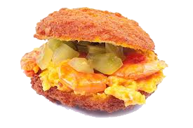

Acarajé is a popular Brazilian street food with West African origins, brought to Brazil by enslaved Africans. It is made from black-eyed pea dough, deep-fried until crispy, and typically filled with vatapá (a creamy paste made from shrimp, peanuts, and coconut milk) or spicy chili sauces. It is especially famous in Bahia, where it is often sold by Baianas dressed in traditional white clothing.
How to Make Acarajé
Ingredients:
- 2 cups dried black-eyed peas
- 1 small onion (chopped)
- 1 clove garlic (minced)
- 1 tsp salt
- 1/2 tsp black pepper
- 1/2 tsp ground dried shrimp (optional)
- 1/2 tsp cayenne pepper (optional)
- 1 tbsp palm oil (for flavor, optional)
- Vegetable or palm oil (for frying)
Instructions:
1. Soak and Peel the Black-Eyed Peas:
Soak the black-eyed peas in water for at least 8 hours or overnight. Rub them between your hands to remove the skins, then rinse thoroughly.
2. Blend the Dough:
In a blender or food processor, blend the peeled peas, onion, garlic, salt, and black pepper until you get a thick, smooth paste.
3. Prepare the Batter:
Transfer the mixture to a bowl and whisk it for a few minutes to incorporate air, which makes the acarajé light and fluffy.
4. Fry the Acarajé:
Heat oil in a deep pan to 350°F (175°C). Using a spoon, drop portions of the batter into the hot oil and fry until golden brown and crispy.
5. Drain and Serve:
Remove from oil and place on paper towels to drain excess oil. Serve hot, traditionally filled with vatapá or a spicy sauce.